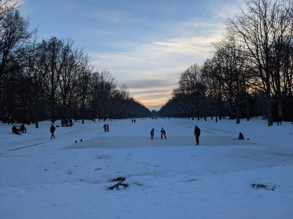
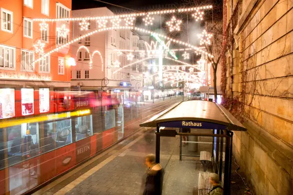

Start / Winterzauber
Aaron Schiele
geprüft am
geprüft am
Was ist der Winterzauber in Kassel?
Rund 120 ausgewählte Aussteller zeigen Weihnachtsdekoration, Winterfloristik, Wohnaccessoires, Mode, Kunsthandwerk und Geschenkideen. Alles steht in Pagodenzelten direkt vor der Orangerie, du bummelst also draußen zwischen geschmückten Tannenbäumen und liebevoll dekorierten Ständen. Neu in diesem Jahr sind weitere Aussteller, besondere Fotospots und neue Illuminationen.
Am schönsten ist es nach Einbruch der Dunkelheit: Dann tauchen Lichtinszenierungen die Orangerie und das ganze Gelände in Licht. Zum Aufwärmen gibt es herzhafte Speisen, Süßes, gebrannte Mandeln, Baumkuchen und Glühwein. Täglich dabei sind ein Walking Act, ein historisches kleines Karussell und ein Fotobus.
Wann findet der Winterzauber 2026 statt?
Der Winterzauber 2026 hat zwei Blöcke: von Donnerstag, 5. November, bis Sonntag, 8. November, und von Donnerstag, 12. November, bis Samstag, 14. November. Das sind zusammen sieben Tage. Am Sonntag, 15. November (Volkstrauertag), bleibt er geschlossen.
| Tag | Geöffnet 2026 |
|---|---|
| Donnerstag | 14 bis 20 Uhr |
| Freitag und Samstag | 12 bis 21 Uhr |
| Sonntag (nur 8. November) | 11 bis 19 Uhr |
Die Tageskassen öffnen 30 Minuten vor Beginn, der letzte Einlass ist eine Stunde vor Schluss. Wer die Lichter sehen will, kommt donnerstags bis samstags am späten Nachmittag oder Abend, denn sonntags ist schon um 19 Uhr Schluss.
Was kostet der Eintritt zum Winterzauber Kassel?
Erwachsene zahlen an der Tageskasse 12 Euro, im Online-Vorverkauf bis zum 4. November 2026 kostet die Karte 10 Euro plus 0,30 Euro Gebühr. Kinder bis 17 Jahre kommen in Begleitung einer erziehungsberechtigten Person kostenlos hinein.
| Karte | Preis 2026 |
|---|---|
| Erwachsene | 12 Euro |
| Online-Vorverkauf (bis 4. November) | 10 Euro zuzüglich 0,30 Euro Gebühr |
| Ermäßigt | 10 Euro |
| Kinder bis 17 Jahre in Begleitung | frei |
| Gruppen ab 20 Personen | 10 Euro pro Person |
Ermäßigt zahlen Schwerbehinderte, Studierende und Schüler, jeweils nur mit gültigem Ausweis. An der Tageskasse geht EC-Zahlung. Weitere Ausflugsziele für Familien findest du unter Kassel mit Kindern.
Ist der Winterzauber der Weihnachtsmarkt in Kassel?
Nein. Der Winterzauber dauert sieben Tage im November und steht an der Orangerie, der Märchenweihnachtsmarkt läuft vom 23. November bis 30. Dezember 2026 in der Innenstadt rund um Königsplatz und Friedrichsplatz. Suchst du einen Weihnachtsmarkt an der Orangerie, bist du beim Winterzauber richtig. Beides lässt sich gut verbinden: erst der Winterzauber zum Einstimmen, später der Bummel durch die Stadt.
Wie kommst du zum Winterzauber Kassel?

Mit der Tram: Vom Bahnhof Wilhelmshöhe fahren die Linien 1, 3 und 4 zum Friedrichsplatz, von dort gehst du 8 bis 12 Minuten hinunter zur Orangerie. Kommst du vom Bergpark Wilhelmshöhe, fährt Tram 1 ab Wilhelmshöhe (Park) und Tram 4 ab Druseltal in die Innenstadt. Fürs Navi: Orangerie, Auedamm 20B, 34121 Kassel.
Mit dem Auto: Die Parkhäuser Königsgalerie, Friedrichsplatz und Staatstheater liegen zu Fuß erreichbar. Parkplätze gibt es am Regierungspräsidium, an der Schwanenwiese und am Messeplatz sowie am gesamten Auedamm bis zur Insel Siebenbergen. Wer auf dem Parkplatz der Messe Kassel parkt, fährt kostenlos mit dem Bus-Shuttle weiter: Er pendelt alle 15 Minuten vom Parkplatz Messehallen an der Damaschkestraße über den Auedamm, die Haltepunkte sind gekennzeichnet.
Hunde sind angeleint erlaubt, behindertengerechte Toiletten sind vorhanden.
Was lässt sich mit dem Winterzauber verbinden?
Die Karlsaue selbst ist ganzjährig frei zugänglich, ein Spaziergang unter kahlen Bäumen gehört im November dazu. Das Planetarium in der Orangerie hat donnerstags bis sonntags von 10 bis 17 Uhr geöffnet, also genau an den Tagen des Winterzaubers. Eine Vorstellung kostet 8 Euro, Tickets besser früh buchen. Das Marmorbad ist im Winter dagegen zu, es öffnet nur vom 1. April bis 31. Oktober. Mehr zum Park und zu den Häusern steht unter Orangerie und Karlsaue.
Häufige Fragen
Was kostet der Eintritt in Winterzauber Kassel?
Erwachsene zahlen 12 Euro, im Online-Vorverkauf bis zum 4. November 2026 sind es 10 Euro plus 0,30 Euro Gebühr. Kinder bis 17 Jahre in Begleitung sind frei, ermäßigt kostet die Karte 10 Euro.
Wann ist Winterzauber in Kassel 2026?
Der Winterzauber läuft vom 5. bis 8. November 2026 und vom 12. bis 14. November 2026. Donnerstags ist von 14 bis 20 Uhr geöffnet, freitags und samstags von 12 bis 21 Uhr, sonntags von 11 bis 19 Uhr.
Wo findet der Winterzauber in Kassel statt?
Der Winterzauber steht in Pagodenzelten vor der Orangerie in der Karlsaue, Adresse Auedamm 20B, 34121 Kassel. Vom Friedrichsplatz sind es 8 bis 12 Minuten zu Fuß.
Wo kann man beim Winterzauber Kassel parken?
Am besten auf dem Parkplatz der Messe Kassel, denn nur von dort fährt ein kostenloser Shuttle alle 15 Minuten. Weitere Parkplätze gibt es am Regierungspräsidium, am Messeplatz und am Auedamm, zu Fuß erreichst du die Orangerie auch von den Parkhäusern Königsgalerie, Friedrichsplatz und Staatstheater.
Darf man Hunde mit zum Winterzauber Kassel nehmen?
Ja, Hunde sind angeleint erlaubt.
Gibt es beim Winterzauber Kassel etwas zu essen?
Ja, es gibt herzhafte Speisen, Süßes, gebrannte Mandeln, Baumkuchen und Glühwein.
Quellen abgerufen am 14.10.2026
- Gartenfestivals Winterzauber Kassel an der Orangerie
- Visit Kassel Winterzauber Kassel
- Märchenweihnachtsmarkt Kassel Märchenweihnachtsmarkt Kassel
- Hessen Kassel Heritage Planetarium · Marmorbad
- documenta Besuch FAQ (Tram zum Friedrichsplatz)
- Stadt Kassel Anreise mit dem ÖPNV zum Bergpark
Weiterlesen

Weihnachtsmarkt Kassel 2026
Märchenweihnachtsmarkt Kassel 2026: vom 23. November bis 30. Dezember, täglich 11 bis 20 Uhr. Standorte, Highlights, Tram, Parken und Anreise.
WeiterlesenOrangerie Kassel und Karlsaue
Orangerie Kassel in der Karlsaue: Park frei zugänglich, Planetarium Do bis So 10 bis 17 Uhr für 8 Euro, Marmorbad April bis Oktober gratis. Anreise.
WeiterlesenKassel mit Kindern
Kassel mit Kindern: Bergpark und Löwenburg, Grimmwelt, Naturkundemuseum, Planetarium und Karlsaue mit Öffnungszeiten und Kinderpreisen im Überblick.
Weiterlesen